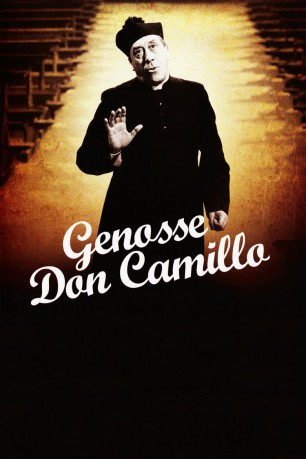

#937 Don Camillo und Peppone 5 - Genosse Don Camillo
 
 IMDB-Wertung: 7.0 / 10
IMDB-Wertung: 7.0 / 10  Metascore: 0
Metascore: 0 
Genosse Don Camillo ist der fünfte Film aus der Don Camillo und Peppone-Reihe. Das Dorf von Bürgermeister Peppone und Don Camillo bekommt nach vielerlei Streitigkeiten eine russische Partnergemeinde. Als Peppone und die anderen Genossen beschließen, zu den Feierlichkeiten auf die andere Seite des eisernen Vorhangs zu fahren, will Don Camillo sich ihnen anschließen. Dies schafft er, indem er droht, einen Seitensprung des Bürgermeisters öffentlich zu machen. Don Camillo beschafft sich falsche Papiere: Er ist nun der Genosse Tarocci. Nur Peppone und die anderen wissen, wer er in Wirklichkeit ist, ein mitreisender Journalist bleibt über die wahre Identität des „Priesterfressers“ im Unklaren. In Russland sind Veranstaltungen zum Kulturaustausch vorgesehen: Ballett, Oper, ein Wettfischen und verschiedene Feste.
Jahr: 1965
Dauer: 108 Minuten
FSK: 12
Land: Italien Studio: Cine-UnionTonspuren:
Untertitel: Deutsch,
Auflösung: 1080p (1920x1080) Größe: 8140 MB
Genre: Komödie
Regisseur: Luigi Comencini
Drehbuch: Giovanni Guareschi, Leonardo Benvenuti, Piero De Bernardi, René Barjavel
Soundtrack: Alessandro Cicognini
Darsteller:
 Fernandel als Don Camillo
Fernandel als Don Camillo Gino Cervi als Giuseppe 'Peppone' Bottazzi
Gino Cervi als Giuseppe 'Peppone' Bottazzi Saro Urzì als Brusco
Saro Urzì als Brusco- Leda Gloria als Maria Bottazzi
 Gianni Garko als Scamoggia
Gianni Garko als Scamoggia- Graziella Granata als Nadia
 Paul Muller als Le pope
Paul Muller als Le pope- Marco Tulli als Smilzo
 Jacques Herlin als Perletti
Jacques Herlin als Perletti- Silla Bettini als Bigio
- Aldo Vasco als Un camarade
- Alessandro Gottlieb als Ivan
- Mirko Valentin als Le faux russe
- Ettore Geri als Oregov
- Margherita Sala als La femme d'Ivan
- Rosemarie Lindt als La fille russe
- Tania Béryl als La voyageuse
- Armando Migliari als Christian-Democrat representative
- Salvatore Campochiaro als The notary
Datei: X:\5-Pentalogie(A-Z)\Don Camillo und Peppone\Don Camillo und Peppone 5 - Genosse Don Camillo (1965, FSK12, 1920x1080).mkv seit 22.04.2015
Festplatte: HD Collection-3(N-Z)-6(A-Z)
 Es gibt insgesamt 8 Filme in der Gruppe '5-Pentalogie(A-Z)\Don Camillo und Peppone'
Es gibt insgesamt 8 Filme in der Gruppe '5-Pentalogie(A-Z)\Don Camillo und Peppone'